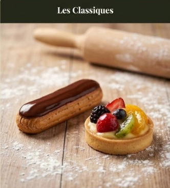
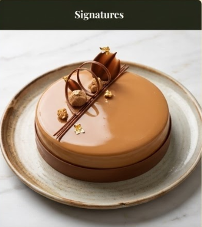
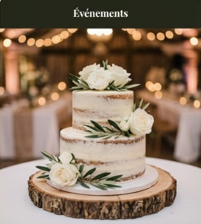

Bienvenue chez Douceurs & Gourmandises, où chaque création est une invitation au voyage. Ingrédients locaux, une passion sincère, et des saveurs authentiques.
Découvrir nos créationsPassionnée par la pâtisserie depuis mon plus jeune âge, j'ai ouvert Douceurs & Gourmandises pour partager avec vous mon amour des bons produits. Ici, pas de compromis sur la qualité : tout est fait maison, chaque matin, dans mon atelier lyonnais.

Le goût de la tradition revisité avec finesse.

Des mariages de saveurs pour surprendre vos papilles.

Vos gâteaux personnalisés pour vos moments inoubliables.
Produits issus de producteurs de la région Auvergne-Rhône-Alpes.
100% fait main, sans colorants ni conservateurs artificiels.
Une carte qui évolue au rythme de la nature et des récoltes.